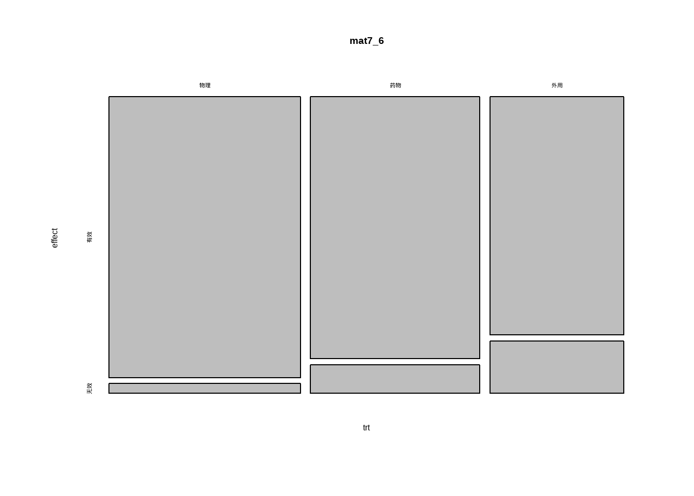

ID<-seq(1,200)
treat<-c(rep("treated",104),rep("placebo",96))
treat<- factor(treat)
impro<-c(rep("marked",99),rep("none",5),rep("marked",75),rep("none",21))
impro<-factor(impro)
data7_1<-data.frame(ID,treat,impro)
str(data7_1)
## 'data.frame': 200 obs. of 3 variables:
## $ ID : int 1 2 3 4 5 6 7 8 9 10 ...
## $ treat: Factor w/ 2 levels "placebo","treated": 2 2 2 2 2 2 2 2 2 2 ...
## $ impro: Factor w/ 2 levels "marked","none": 1 1 1 1 1 1 1 1 1 1 ...
head(data7_1)
## ID treat impro
## 1 1 treated marked
## 2 2 treated marked
## 3 3 treated marked
## 4 4 treated marked
## 5 5 treated marked
## 6 6 treated marked4 卡方检验
4.1 四格表卡方检验的选择
书中关于四格表资料的卡方检验的方法选择以及RxC表资料的检验方法选择做了非常好的总结，在这里一并和大家分享一下：
四格表资料的方法选择：
- 当 n(样本量)≥40 且所有的T(期望频数)≥5时，用χ2检验的基本公式或四格表资料之χ2检验的专用公式；当P ≈ α时，改用四格表资料的 Fisher 确切概率法；
- 当 n≥40 但有 1≤T<5 时，用四格表资料χ2检验的校正公式，或改用四格表资料的 Fisher 确切概率法。
- 当 n<40，或 T<1时，用四格表资料的 Fisher 确切概率法。
4.2 四格表资料的卡方检验
使用孙振球《医学统计学》第4版例7-1的数据。
某医院欲比较异梨醇口服液（试验组）和氢氯噻嗪+地塞米松（对照组）降低颅内压的疗效。将200例颅内压增高症患者随机分为两组。问两组降低颅内压的总体有效率有无差别？
数据一共3列，第一列是id，第二列是治疗方法，第三列是等级（有效和无效）。
简单看下各组情况：
table(data7_1$treat,data7_1$impro)
##
## marked none
## placebo 75 21
## treated 99 5做卡方检验有2种方法，分别演示：
4.2.1 方法1
直接使用gmodels包里面的CrossTable()函数，非常强大，直接给出所有结果，和SPSS差不多。
library(gmodels)
CrossTable(data7_1$treat, data7_1$impro, digits = 4,
expected = T, chisq = T, fisher = T, mcnemar = T,
format = "SPSS")
##
## Cell Contents
## |-------------------------|
## | Count |
## | Expected Values |
## | Chi-square contribution |
## | Row Percent |
## | Column Percent |
## | Total Percent |
## |-------------------------|
##
## Total Observations in Table: 200
##
## | data7_1$impro
## data7_1$treat | marked | none | Row Total |
## --------------|-----------|-----------|-----------|
## placebo | 75 | 21 | 96 |
## | 83.5200 | 12.4800 | |
## | 0.8691 | 5.8165 | |
## | 78.1250% | 21.8750% | 48.0000% |
## | 43.1034% | 80.7692% | |
## | 37.5000% | 10.5000% | |
## --------------|-----------|-----------|-----------|
## treated | 99 | 5 | 104 |
## | 90.4800 | 13.5200 | |
## | 0.8023 | 5.3691 | |
## | 95.1923% | 4.8077% | 52.0000% |
## | 56.8966% | 19.2308% | |
## | 49.5000% | 2.5000% | |
## --------------|-----------|-----------|-----------|
## Column Total | 174 | 26 | 200 |
## | 87.0000% | 13.0000% | |
## --------------|-----------|-----------|-----------|
##
##
## Statistics for All Table Factors
##
##
## Pearson's Chi-squared test
## ------------------------------------------------------------
## Chi^2 = 12.85707 d.f. = 1 p = 0.0003362066
##
## Pearson's Chi-squared test with Yates' continuity correction
## ------------------------------------------------------------
## Chi^2 = 11.3923 d.f. = 1 p = 0.0007374901
##
##
## McNemar's Chi-squared test
## ------------------------------------------------------------
## Chi^2 = 50.7 d.f. = 1 p = 1.076196e-12
##
## McNemar's Chi-squared test with continuity correction
## ------------------------------------------------------------
## Chi^2 = 49.40833 d.f. = 1 p = 2.078608e-12
##
##
## Fisher's Exact Test for Count Data
## ------------------------------------------------------------
## Sample estimate odds ratio: 0.1818332
##
## Alternative hypothesis: true odds ratio is not equal to 1
## p = 0.0005286933
## 95% confidence interval: 0.05117986 0.5256375
##
## Alternative hypothesis: true odds ratio is less than 1
## p = 0.0002823226
## 95% confidence interval: 0 0.4569031
##
## Alternative hypothesis: true odds ratio is greater than 1
## p = 0.9999541
## 95% confidence interval: 0.06281418 Inf
##
##
##
## Minimum expected frequency: 12.48可以看到这个函数直接给出所有结果，根据需要自己选择合适的即可。
本例符合pearson卡方，卡方值为12.85707，p<0.01。拒绝H0，接受H1，可以认为两组降低颅内压总体有效率不等，即可认为异梨醇口服液降低颅内压的有效率高于氢氯噻嗪+地塞米松的有效率。
4.2.2 方法2
先把数据变成2x2列联表，然后用 chisq.test函数做
mytable <- table(data7_1$treat,data7_1$impro)
mytable
##
## marked none
## placebo 75 21
## treated 99 5chisq.test(mytable,correct = F) # 和SPSS一样
##
## Pearson's Chi-squared test
##
## data: mytable
## X-squared = 12.857, df = 1, p-value = 0.0003362这个结果和书中也是一致的，和SPSS算出来的也是一样的。
理论频数是判断使用哪种方法的重要结果，使用chisq.test时也是可疑查看理论频数的：
chisq.test(mytable)$expected
##
## marked none
## placebo 83.52 12.48
## treated 90.48 13.52
注释
四格表资料卡方检验的专用公式/四格表资料卡方检验的校正公式/配对四格表资料的卡方检验/四格表资料的Fisher精确概率法，都可以用方法1直接解决。
下面使用R语言自带的chisq.test()函数进行演示。
孙振球《医学统计学》第4版例7-2，这是一个连续校正卡方检验。
某医师欲比较胞磷胆碱与神经节苷酯治疗脑血管疾病的疗效，将78例脑血管疾病患者随机分为两组。问两种药物治疗脑血管疾病的有效率是否相等？
mat7_2 <- matrix(c(46,6,18,8),
nrow = 2, byrow = T,
dimnames = list(group = c("胞磷胆碱","神经节苷脂"),
effect = c("有效","无效")
)
)
mat7_2
## effect
## group 有效 无效
## 胞磷胆碱 46 6
## 神经节苷脂 18 8进行连续校正的卡方检验：
chisq.test(mat7_2, correct = T)
## Warning in chisq.test(mat7_2, correct = T): Chi-squared approximation may be
## incorrect
##
## Pearson's Chi-squared test with Yates' continuity correction
##
## data: mat7_2
## X-squared = 3.1448, df = 1, p-value = 0.07617P>0.05，不拒绝H0，还不能认为两种药物治疗脑血管疾病的有效率不等
如果不校正的话就会得到P<0.05，相反的结论：
chisq.test(mat7_2, correct = F)
## Warning in chisq.test(mat7_2, correct = F): Chi-squared approximation may be
## incorrect
##
## Pearson's Chi-squared test
##
## data: mat7_2
## X-squared = 4.3527, df = 1, p-value = 0.03695可以反过来看看该数据的理论频数：
chisq.test(mat7_2)$expected
## Warning in chisq.test(mat7_2): Chi-squared approximation may be incorrect
## effect
## group 有效 无效
## 胞磷胆碱 42.66667 9.333333
## 神经节苷脂 21.33333 4.6666674.3 配对四格表资料的卡方检验
孙振球《医学统计学》第4版例7-3。
某实验室分别用乳胶凝集法和免疫荧光法对58名可疑系统性红斑狼疮患者血清中抗核抗体 进行测定。问两种方法的检测结果有无差别？
mat7_3 <- matrix(c(11,12,2,33), nrow = 2, byrow = T,
dimnames = list(免疫荧光 = c("阳性","阴性"),
乳胶凝集 = c("阳性","阴性")
)
)
mat7_3
## 乳胶凝集
## 免疫荧光 阳性 阴性
## 阳性 11 12
## 阴性 2 33配对四格表资料需要用McNemar检验：
mcnemar.test(mat7_3, correct = T)
##
## McNemar's Chi-squared test with continuity correction
##
## data: mat7_3
## McNemar's chi-squared = 5.7857, df = 1, p-value = 0.01616拒绝H0，接受H1，可以认为两种方法的检测结果不同，免疫荧光法的阳性检测率较高。
4.4 四格表资料的Fisher确切概率法
使用孙振球《医学统计学》第4版例7-4的数据。
某医师为研究乙肝免疫球蛋白预防胎儿宫内感染HBV的效果，将33例HBsAg阳性孕妇随机分为预防注射组和非预防组。问两组新生儿的HBV总体感染率有无差别？
mat7_4 <- matrix(c(4,18,5,6), nrow = 2, byrow = T,
dimnames = list(组别 = c("预防注射组","非预防组"),
效果 = c("阳性","阴性")
)
)
mat7_4
## 效果
## 组别 阳性 阴性
## 预防注射组 4 18
## 非预防组 5 6进行 Fisher 检验：
fisher.test(mat7_4)
##
## Fisher's Exact Test for Count Data
##
## data: mat7_4
## p-value = 0.121
## alternative hypothesis: true odds ratio is not equal to 1
## 95 percent confidence interval:
## 0.03974151 1.76726409
## sample estimates:
## odds ratio
## 0.2791061P值为0.121，不拒绝H0，还不能认为预防注射与非预防的新生儿HBV的感染率不等。
4.5 行 x 列表资料的卡方检验
行×列表资料的χ²检验用于多个样本率的比较、两个或多个构成比的比较以及双向无序分类资料的关联性检验。其基本数据有以下3种情况：
- 多个样本率比较时，有R行2列，称为R×2表；
- 两个样本的构成比比较时，有2行C列，称2×C表；
- 多个样本的构成比比较以及双向无序分类资料关联性检验时，有R行C列，称为R×C表。
以上3种情况可统称为行×列表资料。
不是所有的行×列表资料都可以直接用卡方检验，大家要注意甄别！
R×C表资料的分类及其检验方法的选择：
R×C表资料可以分为双向无序、单向有序、双向有序属性相同和双向有序属性不同4类。
- 双向无序R×C表资料
R×C表资料中两个分类变量皆为无序分类变量对于该类资料，若研究目的为多个样本率（或构成比）的比较，可用行×列表资料的χ2检验：若研究目的为分析两个分类变量之间有无关联性以及关系的密切程度时，可用行×列表资料的χ2检验以及Pearson列联系数进行分析。
- 单向有序R×C表资料
有两种形式。一种是R×C表资料中的分组变量（如年龄）是有序的，而指标变量（如传染病的类型）是无序的。其研究目的通常是分析不同年龄组各种传染病的构成情况，此种单向有序R×C表资料可用行×列表资料的χ2检验进行分析。另一种情况是R×C表资料中的分组变量(如疗法)为无序的，而指标变量（如疗效按等级分组）是有序的。其研究目的为比较不同疗法的疗效，此种单向有序R×C表资料宜用秩转换的非参数检验进行分析。
- 双向有序属性相同的R×C表资料
R×C表资料中的两个分类变量皆为有序且属性相同。实际上是配对四格表资料的扩展，即水平数≥3的配伍资料，如用两种检测方法同时对同一批样品的测定结果。其研究目的通常是分析两种检测方法的一致性，此时宜用一致性检验或称Kappa检验；也可用特殊模型分析方法（可用SAS软件）。
- 双向有序属性不同的R×C表资料
R×C表资料中两个分类变量皆为有序的，但属性不同。对于该类资料，若研究目的为分析不同年龄组患者疗效之间有无差别时，可把它视为单向有序R×C表资料，选用秩转换的非参数检验；若研究目的为分析两个有序分类变量间是否存在相关关系，宜用等级相关分析：若研究目的为分析两个有序分类变量间是否存在线性变化趋势，宜用前述的双向有序分组资料的线性趋势检验(test for linear trend)。
4.5.1 多个样本率的比较
使用孙振球《医学统计学》第4版例7-6的数据。
某医师研究物理疗法、药物治疗和外用膏药3种疗法治疗周围性面神经麻痹的疗效，问3种疗法的有效率有无差别。
data7_6 <- read.csv("datasets/例07-06.csv", header = T)
str(data7_6)
## 'data.frame': 6 obs. of 3 variables:
## $ 疗法: int 1 1 2 2 3 3
## $ 疗效: int 1 2 1 2 1 2
## $ f : int 199 7 164 18 118 26
head(data7_6)
## 疗法 疗效 f
## 1 1 1 199
## 2 1 2 7
## 3 2 1 164
## 4 2 2 18
## 5 3 1 118
## 6 3 2 26数据一共3列，第1列是疗法，第2列是有效无效，第3列是频数。首先要对数据格式转换一下，变成table或者矩阵：
mat7_6 <- matrix(data7_6$f,nrow = 3,byrow = T,
dimnames = list(trt = c("物理", "药物", "外用"),
effect = c("有效","无效")))
data7_6
## 疗法 疗效 f
## 1 1 1 199
## 2 1 2 7
## 3 2 1 164
## 4 2 2 18
## 5 3 1 118
## 6 3 2 26这里教大家一个可视化列联表资料非常好用的马赛克图：
mosaicplot(mat7_6)
行×列表资料的卡方检验：
chisq.test(data7_6, correct = F)
## Warning in chisq.test(data7_6, correct = F): Chi-squared approximation may be
## incorrect
##
## Pearson's Chi-squared test
##
## data: data7_6
## X-squared = 56.868, df = 10, p-value = 1.411e-08结果和书中一致。拒绝H0，接受H1，可认为3种疗法治疗周围性面神经麻痹的有效率有差别。
多个样本率的比较也可以使用以下函数进行检验：
# 只适用于两列的，类似于 有效/无效 这种！
prop.test(mat7_6, correct = TRUE)
##
## 3-sample test for equality of proportions without continuity correction
##
## data: mat7_6
## X-squared = 21.038, df = 2, p-value = 2.702e-05
## alternative hypothesis: two.sided
## sample estimates:
## prop 1 prop 2 prop 3
## 0.9660194 0.9010989 0.8194444可以看到两种结果是一样的！
4.5.2 样本构成比的比较
使用孙振球《医学统计学》第4版例7-7的数据。
某医师在研究血管紧张素I转化酶（ACE）基因I/D多态与2型糖尿病肾病（DN）的关系时，将249例2型糖尿病患者按有无糖尿病肾病分为两组，问两组2型糖尿病患者的ACE基因型总体分布有无差别？
mat7_7 <- matrix(c(42,48,21,30,72,36),nrow = 2,byrow = T,
dimnames = list(dn = c("dn组","非dn组"),
idi = c("dd","id","ii")
)
)
mat7_7
## idi
## dn dd id ii
## dn组 42 48 21
## 非dn组 30 72 36进行卡方检验：
chisq.test(mat7_7, correct = F)
##
## Pearson's Chi-squared test
##
## data: mat7_7
## X-squared = 7.9127, df = 2, p-value = 0.01913卡方值为7.91，和书中一致。拒绝H0，接受H1，可认为DN组与无DN组的2型糖尿病患者的ACE基因型分布不同。
4.5.3 双向无序分类资料的关联性检验
对于双向无序分类资料，研究者通常关注的是两个分类变量之间有无关系？在有关系的前提下，可计算Pearson列联系数C衡量关系的密切程度。
使用孙振球《医学统计学》第4版例7-8的数据。
测得某地5801人的ABO血型和MN血型结果，问两种血型系统之间是否有关联？
mat7_8 <- matrix(c(431,490,902,388,410,800,495,587,950,137,179,32),
nrow = 4,byrow = T,
dimnames = list(abo = c("o","a","b","ab"),
mn = c("m","n","mn")
)
)
mat7_8
## mn
## abo m n mn
## o 431 490 902
## a 388 410 800
## b 495 587 950
## ab 137 179 32进行关联性检验：
chisq.test(mat7_8,correct = F)
##
## Pearson's Chi-squared test
##
## data: mat7_8
## X-squared = 213.16, df = 6, p-value < 2.2e-16拒绝H0，接受H1，可以认为两种血型系统间有关联，可进一步计算Pearson列联系数，以分析其关系密切程度。
计算列联系数：
library(vcd)
assocstats(mat7_8)
## X^2 df P(> X^2)
## Likelihood Ratio 248.14 6 0
## Pearson 213.16 6 0
##
## Phi-Coefficient : NA
## Contingency Coeff.: 0.188
## Cramer's V : 0.136Pearson列联系数是0.188，由上看出，两种血型系统间虽然有关联性，但列联系数C数值较小，虽然有统计学意义，可认为关系不太密切。
4.5.4 双向有序分组资料的线性趋势检验
对双向有序属性不同的R×C表资料，除可推断两个分类变量是否存在相关关系外，还可通过χ2分解推断其相关是否为线性相关。
其基本思想是：首先计算R×C表资料的χ2值，然后将总的χ2值分解成线性回归分量与偏离线性回归分量。
- 若两分量均有统计学意义，说明两个分类变量存在相关关系，但关系不是简单的直线关系；
- 若线性回归分量有统计学意义，偏离线性回归分量无统计学意义时，说明两个分类变量存在相关关系，而且是直线关系。
使用孙振球《医学统计学》第4版例7-9的数据。
某研究者欲研究年龄与冠状动脉粥样硬化等级之间的关系，将278例尸解资料整理如下，问年龄与冠状动脉粥样硬化等级之间是否存在线性变化趋势？
mat7_9 <- matrix(c(70,22,4,2,27,24,9,3,16,23,13,7,9,20,15,14),
nrow = 4,byrow = T,
dimnames = list(age = c("20~","30~","40~","≥50"),
level = c("-","+","++","+++")
)
)
mat7_9
## level
## age - + ++ +++
## 20~ 70 22 4 2
## 30~ 27 24 9 3
## 40~ 16 23 13 7
## ≥50 9 20 15 14进行卡方检验以获取总的χ2值：
chisq.test(mat7_9)
##
## Pearson's Chi-squared test
##
## data: mat7_9
## X-squared = 71.432, df = 9, p-value = 7.97e-12这里的71.432是总变异的值，如果要计算线性回归分量的卡方值，可以使用DescTools::MHChisqTest()函数实现(Mantel-Haenszel卡方检验会在下一节介绍)：
library(DescTools)
MHChisqTest(mat7_9)
##
## Mantel-Haenszel Chi-Square
##
## data: mat7_9
## X-squared = 63.389, df = 1, p-value = 1.696e-15结果显示线性回归分量的卡方值是63.389（与书中基本一致，由于计算过程差异，略有不同），P值小于0.01。
非线性回归分量的卡方值=总的卡方值-线性回归分量的卡方值=8.043
有了卡方值和自由度，就可以使用pchisq计算P值：
# 计算非线性回归分量的P值
pchisq(q=8.043, df=8, lower.tail = F)
## [1] 0.4292811这个值和书中是一致的。
书里是看两者之间有没有线性趋势，我们可以直接用lm()函数做，把age作为自变量，把level作为因变量即可，由于没有原始数据，这里就不演示了。
4.6 多个样本率间的多重比较
主要有卡方分割法、Scheffe可信区间法、SNK法等，这里主要演示卡方分割法。
其实非常简单，就是把多个组手动拆分为多个两个组，分别进行卡方检验，和P值比较，只不过这里的P值不再是0.05，而是和组数（比较次数）有关。
使用例7-10的数据。
data7_10 <- read.csv("datasets/例07-06.csv", header = T)
mat7_10 <- matrix(data7_10$f,nrow = 3,byrow = T,
dimnames = list(trt = c("物理", "药物", "外用"),
effect = c("有效","无效")))
mat7_10
## effect
## trt 有效 无效
## 物理 199 7
## 药物 164 18
## 外用 118 26手动拆分，两两比较，直接取子集即可：
# 物理治疗组和药物治疗组的卡方检验
chisq.test(mat7_10[1:2,], correct = F)
##
## Pearson's Chi-squared test
##
## data: mat7_10[1:2, ]
## X-squared = 6.756, df = 1, p-value = 0.009343
# 物理治疗组和外用膏药组的卡方检验
chisq.test(mat7_10[c(1,3),], correct = F)
##
## Pearson's Chi-squared test
##
## data: mat7_10[c(1, 3), ]
## X-squared = 21.323, df = 1, p-value = 3.881e-06
# 药物治疗组和外用膏药组的卡方检验
chisq.test(mat7_10[2:3,], correct = F)
##
## Pearson's Chi-squared test
##
## data: mat7_10[2:3, ]
## X-squared = 4.591, df = 1, p-value = 0.03214可以看到和书中是一样的。
这时的 P’ = P / (K * (K - 1) / 2 + 1)，K是组数，一般情况下P=0.05，所以P’ = 0.05/(3*(3-1)/2+1) = 0.0125，上面3个卡方分析的P值和0.0125比较即可！
也可以使用rcompanion::pairwiseNominalIndependence()实现多重比较，直接给出P值和调整后的P值：
library(rcompanion)
ff <- pairwiseNominalIndependence(mat7_10)
ff
## Comparison p.Fisher p.adj.Fisher p.Gtest p.adj.Gtest p.Chisq p.adj.Chisq
## 1 物理 : 药物 1.20e-02 1.80e-02 8.60e-03 1.29e-02 9.34e-03 1.40e-02
## 2 物理 : 外用 7.53e-06 2.26e-05 3.48e-06 1.04e-05 3.88e-06 1.16e-05
## 3 药物 : 外用 3.49e-02 3.49e-02 3.27e-02 3.27e-02 3.21e-02 3.21e-02结果中的p.Chisq和分开计算的P值是一样的，和0.0125进行比较即可。
4.7 Cochran-Mantel-Haenszel卡方统计量检验
Mantel-Haenszel卡方统计量是用来检验两个有序分类变量(二维列联表)是否存在线性相关的，Cochran-Mantel-Haenszel卡方统计量是在其基础上提出的，用于高维列联表的分析，即控制了某一个或几个混杂因素（分层变量）之后，检验二维列联表的行变量和列变量是否存在统计学关联。Cochran-Mantel-Haenszel检验属于分层卡方检验方法。
根据行变量X和列变量Y的类型不同，Cochran-Mantel-Haenszel卡方统计量包括以下几种：
- 相关统计量（correlation-statistic）：适用于X和Y均为有序分类变量的资料。对于二维列联表（即：没有分层变量），CMH卡方统计量即为MH卡方统计量（MH卡方=(n-1)r2，其中r是行变量和列变量的Pearson相关系数）。
- 方差分析统计量：也称行平均得分统计量（row-mean-scores-statistic），适用于列变量Y为有序分类变量的资料。
- 一般关联统计量（general-association-statistic）：适用于X和Y均为无序分类变量的资料，目的是检验X和Y是否存在关联性。对于二维列联表，CMH卡方统计量即为Pearson卡方统计量；对于高维列联表，CMH卡方统计量相当于用分层变量校正后的Pearson卡方统计量。
使用孙振球《医学统计学》第4版例7-12的数据。
为研究心肌梗死与近期使用避孕药之间的关系，采用病例对照研究方法调查了234名心肌梗死病人与1742名对照使用口服避孕药的状况。考虑到年龄是混杂因素，按照年龄分层后结果如下。试分析排除了年龄因素的影响后，心肌梗死是否与近期使用口服避孕药有关。
这个数据有3个变量，首先是年龄，根据年龄分成两层，然后是是否心肌梗死和是否口服避孕药。年龄是混杂因素（分层变量），心肌梗死和口服避孕药都是无序分类资料。
我们可以直接把这个数据录入成3维array的形式：
array7_12 <- array(c(17,47,
121,944,
12,158,
14,663),
dim = c(2,2,2),
dimnames = list(心肌梗死 = c("病例","对照"),
口服避孕药 = c("是","否"),
年龄分层 = c("<40岁","≥40岁")
)
)
array7_12
## , , 年龄分层 = <40岁
##
## 口服避孕药
## 心肌梗死 是 否
## 病例 17 121
## 对照 47 944
##
## , , 年龄分层 = ≥40岁
##
## 口服避孕药
## 心肌梗死 是 否
## 病例 12 14
## 对照 158 663这样就能直接进行Cochran-Mantel-Haenszel检验了，这个检验的函数是R语言自带的，不需要另外的包：
mantelhaen.test(array7_12,correct = F)
##
## Mantel-Haenszel chi-squared test without continuity correction
##
## data: array7_12
## Mantel-Haenszel X-squared = 24.184, df = 1, p-value = 8.755e-07
## alternative hypothesis: true common odds ratio is not equal to 1
## 95 percent confidence interval:
## 1.930775 4.933840
## sample estimates:
## common odds ratio
## 3.086444这样就得到结果了，CMH卡方=24.184，OR值及95%可信区间为：3.09（1.93-4.93）。这个结果和书里也是一样的，拒绝H0，接受H1，可认为控制了年龄的影响后，心肌梗死与近期服用口服避孕药有关。
对于分层病例对照研究或队列研究资料，通常应用Breslow-Day检验对各层的效应值（OR或RR）进行齐性检验。若不拒绝齐性假设，才可依据CMH检验的结果推断出暴露因素是否与疾病相关。如果相关，可进一步用Mantel-Haenszel法估计OR或RR值及其可信区间。若经Breslow-Day检验拒绝了齐性假设，则提示分层变量与暴露因素间存在交互作用，此时CMH检验的结果不能说明问题，可进行多元logistic回归分析。
Breslow-Day检验分层数据中各层的效应值是否同质（即检验同质性假设或异质性），这个检验可以通过DescTools包实现：
library(DescTools)
BreslowDayTest(array7_12)
##
## Breslow-Day test on Homogeneity of Odds Ratios
##
## data: array7_12
## X-squared = 0.23409, df = 1, p-value = 0.6285结果也是和书中一模一样。本例中，Breslow-Day检验的结果为P=0.6285，可认为两年龄组口服避孕药对心肌梗死的总体OR值同质；用Mantel-Haenszel法估计OR值及其95%可信区间为3.09（1.93-4.93）。
除了Breslow-Day检验，还可用woolf法检验不同分层之间的效应值的同质性，通过使用?mantelhaen.test查看帮助文档，作者直接给了一个现成的计算方法：
woolf <- function(x) {
x <- x + 1 / 2
k <- dim(x)[3]
or <- apply(x, 3, function(x) (x[1,1]*x[2,2])/(x[1,2]*x[2,1]))
w <- apply(x, 3, function(x) 1 / sum(1 / x))
1 - pchisq(sum(w * (log(or) - weighted.mean(log(or), w)) ^ 2), k - 1)
}
woolf(array7_12)
## [1] 0.6400154直接给出了P值，结果也是和Breslow-Day检验一致的。
两种方法的使用建议如下：
| 场景 | 推荐方法 |
|---|---|
| 大样本、各层单元格频数充足 | Woolf或Breslow-Day均可 |
| 小样本、存在稀疏单元格 | 优先使用Breslow-Day |
| 需要与Mantel-Haenszel OR配套使用 | Breslow-Day更匹配（因MH也是基于条件推断） |
如果你的是原始数据的形式，进行CMH检验也是很简单的，我们构造一个和上面数据一样的原始数据：
# 可以根据以上数据自己编写，但是这个方法略慢
# myoo <- data.frame(年龄分层 = c(rep("<40岁",1129),rep("≥40岁",847)),
# 心肌梗死 = c(rep("病例",64),rep("对照",1065),
# rep("病例",170),rep("对照",677)
# ),
# 口服避孕药 = c(rep("是",17),rep("否",47),
# rep("是",121),rep("否",944),
# rep("是",12),rep("否",158),
# rep("是",14),rep("否",663)
# )
# )
#
# # 分类变量变为因子型
# myoo$年龄分层 <- factor(myoo$年龄分层,levels = c("<40岁","≥40岁"))
# myoo$心肌梗死 <- factor(myoo$心肌梗死, levels = c("病例","对照"))
# myoo$口服避孕药 <- factor(myoo$口服避孕药, levels = c("是","否"))
# 更好的方法是直接用函数实现：
myoo <- DescTools::Untable(array7_12)
head(myoo)
## 心肌梗死 口服避孕药 年龄分层
## 1 病例 是 <40岁
## 2 病例 是 <40岁
## 3 病例 是 <40岁
## 4 病例 是 <40岁
## 5 病例 是 <40岁
## 6 病例 是 <40岁用xtabs查看数据，结果和我们的array的形式是一样的：
myoo.tab <- xtabs(~口服避孕药+心肌梗死+年龄分层,data = myoo)
myoo.tab
## , , 年龄分层 = <40岁
##
## 心肌梗死
## 口服避孕药 病例 对照
## 是 17 47
## 否 121 944
##
## , , 年龄分层 = ≥40岁
##
## 心肌梗死
## 口服避孕药 病例 对照
## 是 12 158
## 否 14 663
# 或者用table也行
# table(myoo$口服避孕药,myoo$心肌梗死,myoo$年龄分层)这样就可以直接进行Cochran-Mantel-Haenszel检验了：
mantelhaen.test(myoo.tab, correct = F)
##
## Mantel-Haenszel chi-squared test without continuity correction
##
## data: myoo.tab
## Mantel-Haenszel X-squared = 24.184, df = 1, p-value = 8.755e-07
## alternative hypothesis: true common odds ratio is not equal to 1
## 95 percent confidence interval:
## 1.930775 4.933840
## sample estimates:
## common odds ratio
## 3.086444结果也是一样的。
注释注意
mantelhaen.test会将两个主变量视为无序分类变量，不会使用变量的顺序信息，它执行的是CMH的“一般关联检验”（即上述Cochran-Mantel-Haenszel卡方统计量的第3种情况），而非“行平均得分检验”或“相关检验”，所以如果你的数据包含有序分类变量不推荐用这个函数。另外，mantelhaen.test只对2*2*K列联表计算OR值及可信区间，超过2也能给出P值和卡方值，但不会提供OR值。
下面是对于CMH检验的两个补充内容。
4.7.1 CMHtest()
vcdExtra中的CMHtest()可以完美实现上述Cochran-Mantel-Haenszel卡方统计量的3种情况！
对于以上例题数据，使用CMHtest()可以得到以下结果：
vcdExtra::CMHtest(myoo.tab, overall=T)
## $`年龄分层:<40岁`
## Cochran-Mantel-Haenszel Statistics for 口服避孕药 by 心肌梗死
## in stratum 年龄分层:<40岁
##
## AltHypothesis Chisq Df Prob
## cor Nonzero correlation 12.991 1 0.00031305
## rmeans Row mean scores differ 12.991 1 0.00031305
## cmeans Col mean scores differ 12.991 1 0.00031305
## general General association 12.991 1 0.00031305
##
##
## $`年龄分层:≥40岁`
## Cochran-Mantel-Haenszel Statistics for 口服避孕药 by 心肌梗死
## in stratum 年龄分层:≥40岁
##
## AltHypothesis Chisq Df Prob
## cor Nonzero correlation 11.362 1 0.00074972
## rmeans Row mean scores differ 11.362 1 0.00074972
## cmeans Col mean scores differ 11.362 1 0.00074972
## general General association 11.362 1 0.00074972
##
##
## $ALL
## Cochran-Mantel-Haenszel Statistics for 口服避孕药 by 心肌梗死
## Overall tests, controlling for all strata
##
## AltHypothesis Chisq Df Prob
## cor Nonzero correlation 24.184 1 8.7551e-07
## rmeans Row mean scores differ 24.184 1 8.7551e-07
## cmeans Col mean scores differ 24.184 1 8.7551e-07
## general General association 24.184 1 8.7551e-07它会分别给出不同年龄组及合并后的：
- 相关性统计量：
cor这一行的结果；将两个变量都视为有序分类变量； - 行平均得分统计：
rmeans这一行的结果；将列变量视为有序分类变量； - 列平均得分统计：
cmeans这一行的结果；将行变量视为有序分类变量； - 一般关联统计量：
general这一行的结果，将两个变量都视为无序分类变量。当存在多个层（strata）时，该统计量相当于一个经过分层调整的Pearson χ²检验，其结果与R中mantelhaen.test()计算的完全一致。
4.7.2 Cochran-Armitage检验
Cochran-Armitage（CA）趋势检验是一种专门用于分析有序分类变量与二分类变量之间是否存在线性趋势的统计方法。它在流行病学、临床试验、毒理学和遗传关联研究中非常常见。
核心目的是检验随着有序分组（如剂量、年龄组、基因型）的增加，某二分类结局（如“患病/未患病”、“有效/无效”）的发生率是否呈现单调上升或下降的趋势。
比如我们想要了解某种药物剂量和疗效之间的关系，药物剂量有50mg，100mg，200mg，300mg，500mg，5个水平（有序分类变量），疗效分为有效/无效两个水平（无序分类变量）。
df <- matrix(c(13, 136, 17, 125, 16, 104, 32, 149, 9, 45),
nrow = 5, byrow = T,
dimnames = list("Dose" = c("50", "100", "200", "300", "500"),
"effect" = c("Yes", "No"))
)
df
## effect
## Dose Yes No
## 50 13 136
## 100 17 125
## 200 16 104
## 300 32 149
## 500 9 45首先可以计算一下不同药物剂量下的有效率是多少：
df[,1]/rowSums(df)
## 50 100 200 300 500
## 0.08724832 0.11971831 0.13333333 0.17679558 0.16666667可以看到随着药物剂量增加，有效率整体也是增加的，下面使用CA检验验证一下。
使用DescTools包中的CochranArmitageTest()函数进行检验：
DescTools::CochranArmitageTest(df)
##
## Cochran-Armitage test for trend
##
## data: df
## Z = 2.2116, dim = 5, p-value = 0.02699
## alternative hypothesis: two.sidedZ值是检验统计量，正数表示上升趋势，负数表示下降趋势，P=0.02699<0.05，说明存在统计学显著性，可以认为随着剂量增加，有效率增加。
4.8 频数分布拟合优度卡方检验
使用孙振球《医学统计学》第4版例7-13的数据。
观察某克山病区克山病患者的空间分布情况，调查者将该地区划分为279个取样单位，统计各取样单位历年累计病例数，问此资料是否服从Poisson分布？
R语言做卡方拟合优度检验非常简单，关键是概率的计算，这里我们直接用书中的概率。
x <- c(26,51,75,63,38,17,9)
p <- c(0.0854,0.2102,0.2585,0.2120,0.1304,0.0641,0.0394)
chisq.test(x=x, p =p)
##
## Chi-squared test for given probabilities
##
## data: x
## X-squared = 2.0377, df = 6, p-value = 0.9162结果和书中非常接近。
这里贴一个网络教程的概率计算方法：
x<-0:6
y<-c(26,51,75,63,38,17,9)
mean<-mean(rep(x,y))
q<-ppois(x,mean)
n<-length(y)
p<-c()
p[1]<-q[1]
p[n]<-1-q[n-1]
for(i in 2:(n-1))
p[i]<-q[i]-q[i-1]
chisq.test(y, p=p,correct=F)
##
## Chi-squared test for given probabilities
##
## data: y
## X-squared = 2.0569, df = 6, p-value = 0.9144结果和书中非常接近。